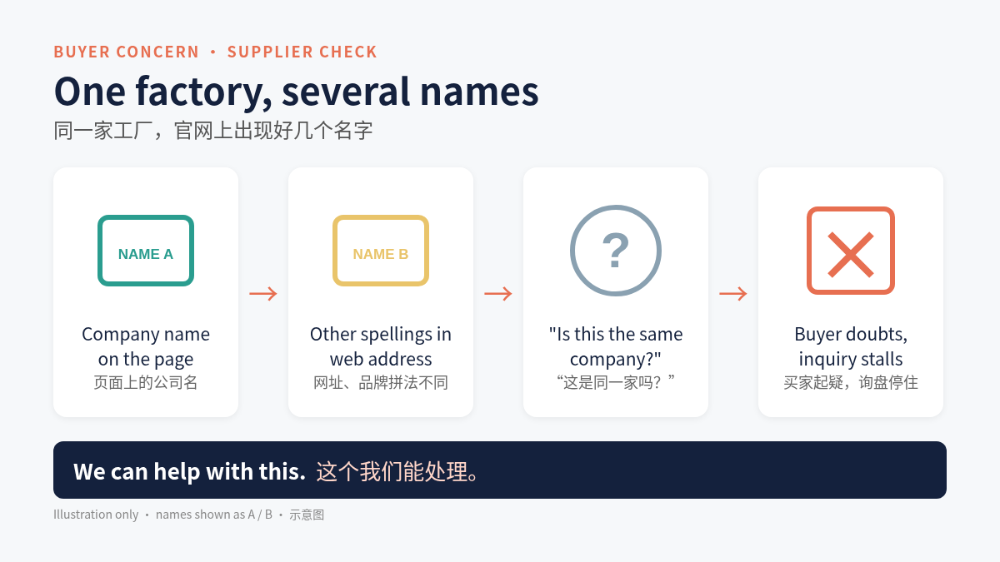

Foshan Tanlin Furniture Co., Ltd.
Office chair manufacturer, Longjiang, Shunde, Foshan, China
About
States it was founded in 2014 and is a furniture manufacturer specialising in office chairs, based in Longjiang, Shunde, covering design, R&D, production and global distribution of office chairs. (source)
Supplier check: what buyers worry about most
The website uses several spellings for one company: Tanlin in the company name, Tanglin in the web address, and Tonglin and Linkyou as brand names. A buyer checking a new supplier may wonder whether these are the same company, and the inquiry stalls.

We can help with this.
What they make
- Leather office chairs
- Mesh office chairs
- Brands shown: Tonglin and Linkyou
Key facts, per public pages, to be confirmed with you
| Founded | 2014 (as stated) (source) |
|---|---|
| Production workshop | To be confirmed with you (public sources differ) |
| Testing | States 8 chair testing machines and a QC team (source) |
| Certification claims | Some product titles mention BIFMA certificate; certificate numbers not seen (source) |
| Address | No.12 Lianxin Road, Wanggang Village, Longjiang Town, Shunde District, Foshan City, Guangdong Province, China (source) |
| Factory contact (published) | Mobile / WhatsApp / WeChat +86 189 2457 0671; E-mail vivian@tanglinseating.com (source) |
To be confirmed with you
- MOQ: To be confirmed with you.
- Lead time (sample / bulk): To be confirmed with you.
- Payment terms: To be confirmed with you.
- Trade terms (FOB / CIF / DDP): To be confirmed with you.
- Packaging specification: To be confirmed with you.
- Warranty: To be confirmed with you.
- Quality control and inspection: To be confirmed with you.
- Test reports (certificate numbers): To be confirmed with you.
- Production capacity: To be confirmed with you.
- Main export markets: To be confirmed with you.
Sources
- https://www.tanglinseating.com/ (accessed 2 November 2026)
- https://www.tanglinseating.com/about/ (accessed 2 November 2026)
- https://www.tanglinseating.com/contact/ (accessed 2 November 2026)
Source and status note
All non-blank content above is reorganised from the public pages listed in Sources (accessed 2 November 2026). Blank fields had no public figure. The illustration is generic and does not show this factory's products or data. This page is a format sample prepared by QiaoReach, an export growth service. It is not affiliated with, endorsed by, or published for Tanlin, and has not been confirmed by the factory. Contact details shown are the factory's own published details.